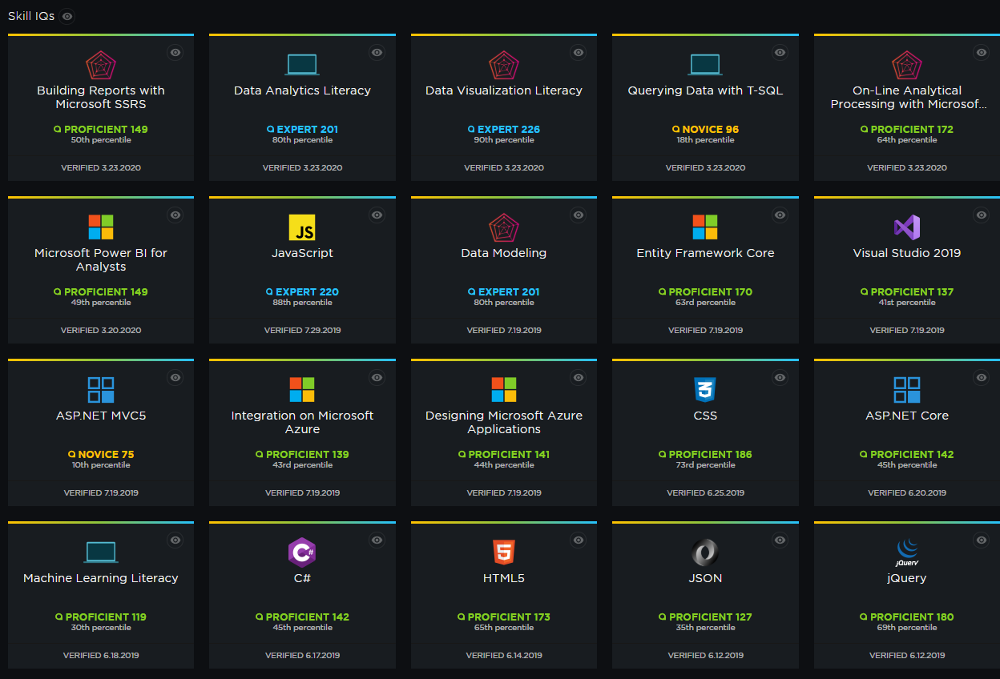

SUMMARY
I am a Full Stack Software Developer with just over 5 years professional experience, and recently finished my Masters in Data Science with a specialization in Fraud Analysis from Utica University. I have a strong desire for success, a joy for working in fast-paced environments, and a need to utilize new technologies to drive business growth and potential. I have built the architecture and security for machine learning use in Azure environments, worked as team lead in software and website development, am a graduate of California State University, and a veteran of the United States Air Force.
COMPUTER SKILLS
Languages: R, Python, C#, Javascript, JQuery, C++, C, LISP, PHP, CSS/Bootstrap, TensorFlow, Java, XML, Swift.
Database Tools: MySQL Server, SQL Server Management Studio, and Cloud SQL.
Platforms: Windows, Linux (multiple distros), Android and Apple distribution, and GitHub repository.
EXPERIENCE
- Lead team meetings on a regular basis, creating full story information for sprints including acceptance criteria. Developed standards for story pointing to avoid basing value on expectation of time, and instead focusing on complexity. This increased code developed per sprint and ensured timely delivery of new application requirements.
- Performed code review and worked with cross-functional teams to create company wide coding standards, ensuring a reduction in tech debt and ability for developers to work across teams with minimal downtime for training or knowledge transfer.
- Acting contractor for Disney Imagineering NexGEN team, building multiple front facing applications to convert paper based contracting at park locations to computer based automated systems including connections to Sharepoint and DocuSign APIs. These systems greatly increase the speed to build new park attractions and facilitate tools to bring products to market.
- Full stack developer on .Net Core stack, maintain multiple front facing applications and accompanying database connections for users utilizing an Agile based CI/CD pipeline with C#, SQL, and Javascript based backend as well as C#, CSS, JSON, Javascript and JQuery based front end components with modern Bootstrap and Kendo style.
- Incorporated test-driven development, comprised of Moq based automated Unit and Integration testing, and paired programming into software development life cycle, ensuring stable deployment and user-friendly code base.
.Net
.Net Core
Visual Studio
VS Code
Azure Data Studio
CSS
Bootstrap
JavaScript
JQuery
JSON
SQL
GitHub
Agile
Scrum
Moq
Jira
Atlassian
Picture opens link in new tab.
Berkshire Hathaway Homestate Companies, Sacramento, CA
2019-2021
- Built Data Factory, Data Lake, Databricks, and Jupyter based components with R, Python, and JSON scripting in Microsoft Azure for Machine Learning usage and consumption. Optimized cluster creation for performance and budget.
- Developed multiple Machine Learning driven projects, for real-time consumption by numerous Business Analysts and Product Owners, built in Azure Databricks and Datascience VM environments.
- Full stack developer on .Net Core stack, maintain multiple front facing applications and accompanying database connections for users utilizing an Agile based CI/CD pipeline with C#, SQL, and Javascript based backend as well as C#, CSS, XML, Javascript and JQuery based front end components with modern Bootstrap style.
- Incorporated test-driven development, compromised of Selenium and Moq based automated Unit and Integration testing, and paired programming into software development life cycle, ensuring stable deployment and user-friendly code base.
.Net
.Net Core
Entity Framework
TFS/ADO
PHP
CSS
Bootstrap
JavaScript
JQuery
Ajax
JSON
Java
XML
MySQL
GitHub
Agile
Scrum
Selenium
Moq
Azure Cloud
Data Factory
Databricks
Data Lake
Jupyter
Machine Learning
Datascience VM
Picture opens link in new tab.
- Launched new SEO/SEM enhancements to 13 front facing sites built on Apache servers with a SQL and PHP based backend and a PHP, Javascript, JQuery, and CSS/Bootstrap driven frontend, resulting in an increase in new user volume by 25% over a two-month period.
- Initiated interface controls and database REST API connections with multiple outside commercial resources including: Stripe, Optimal Blue, Black Knight, and Zillow APIs, giving users a comprehensive tool suite for loan calculation and creation.
- Expanded impression and click through rates of ads by 20% by implementing real time monitoring of user interactions with AWS, Google Ad Manager and custom service components to maintain and analyze vendor interactions.
- Reduced overall testing time of customer registration process by over 75% through a custom designed, fully automated test suite with Selenium for full system integration tests, and had sole responsibility to budget and maintain all Apache based servers and SQL run databases through Amazon AWS and GitHub Enterprise versioning control.
PHP
CSS
Bootstrap
JavaScript
JQuery
Ajax
Java
Swift
MySQL
GitHub
Selenium
Apple Marketplace
Google Play
RESTful Api
Web Api
AWS
Apache
Stripe
Optimal Blue
Black Knight
Zillow
Picture opens link in new tab.
- Authored new symmetric key cipher block for realtime 1024-bit encryption in C and C++, housed in a GitHub repository, using Agile/Scrum methodology.
- Integrated automated testing suite and control flow graphs to verify code execution allowing for simplification of the software development cycle.
- Coordinated tasks and communication with group of five senior level students.
C
C++
Visual Studio
GitHub
Agile
Scrum
Picture opens link in new tab.
- Increased social awareness and activism efforts against cybercriminals and stalkers by maintaining Alliance Against Cybercrime website and social media presence.
- Established a secure, city-wide Wi-Fi network for public use with interference collection techniques and testing industry standard security capabilities and protocols.
- Recreated all graphics and logos for Black Diamond Data and Alliance Against Cybercrime as vector art to reduce size and increase readability across all platforms.
- Coordinated interactions with San Francisco Electronic Crimes Task Force.
HTML/PHP
CSS
Pictures open link in new tab.
- Unified the physical, personnel, industrial, and information security standards while interacting with six national government intelligence agencies.
- Maintained on call support 24/7 for 18 months by simultaneously performing the duties of three security manager personnel of higher rank.
Microsoft Access
Picture opens link in new tab.
EDUCATION
Utica University
Utica, NY
2021-2023
- Masters of Science in Data Science, GPA in major: 4.0
- Specialization in White Collar Crime and Fraud Analysis
- Coursework: Machine Learning, Data Driven Decision Making, Data Mining, Data Visualization, Advanced Crime and Fraud Analysis, Advanced Statistical Methodology
California State University
Sacramento, CA
2015-2017
- Bachelor of Science in Computer Science, GPA in major: 3.75
- Minor in Mathematics
- Coursework: Computer System Attacks and Countermeasures, Cryptography, Intelligent Systems, Linear Programming, and Probability Theory
Contra Costa Community College
San Pablo, CA
2013-2015
- Major in Computer Science and Mathematics.
Community College of the Air Force
Okinawa, Japan
2003-2010
- Obtained Certificate in Communications Technology and Records Custody.
Defense Language Institute
Monterey, CA
2003-2005
- Obtained Certificate for fluency in Mandarin Chinese.
PluralSight Continuing Education
- I stay fluent and continue to improve in computer disciplines that I have worked on in the past and would like to engage in in the future.
